| 日付 | 2012年9月1日（土） |
|---|---|
| 山域 | 富士山周辺 |
| メンバー | 家族（妻、長女・1歳） |
| 山行形態 | 子連れ日帰り |
| アクセス | 車 |
| ルート (Map) | 御庭 (8:09) - (8:19) お中道分岐点 - (9:35) 大沢崩れ (10:08) - (11:39) お中道分岐点 - (12:00) 御庭 |
富士山の火口を一周することをお鉢巡りという。
一方、富士山の中腹を一周することをお中道巡りという。
このお中道、かつては一周できたのだが、今では道が閉鎖になって久しい。
その一番の原因は、富士山の西にある大沢崩れの崩壊が進んだからである。
この大沢崩れは、以前に長者ヶ岳から眺めたことがあり、
いつかは訪れてみたいと思っていた。
今回、富士山五合目からわずかに残されたお中道を辿って
富士山大沢崩れを訪れてみることにする。
9月に入り富士山は空いているだろうと予想していたのだが、思いの外混雑している。
渋滞のため5合目駐車場までたどり着くこともできず、手前の御庭あたりで側道に車を停める。
さすがは富士山、ものすごい人気だ。
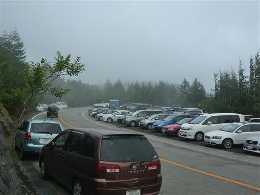
ほとんどの人はここから車道を歩いて吉田口を目指すようだ。
直接お中道に向かう道に人影は見えない。
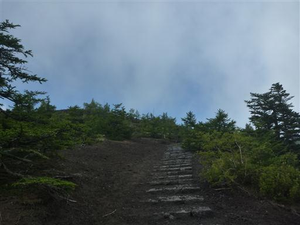
10分ほどの登りでお中道に到着する。
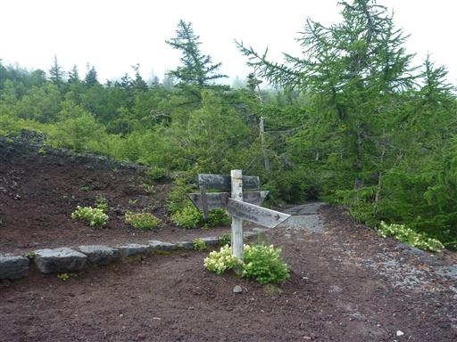
お中道は石畳になっていて歩きやすい。
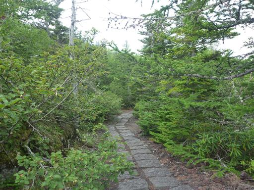
一瞬雲が消えて、富士山山頂部が姿を現す。久しぶりに富士山に登りたくなってきた。
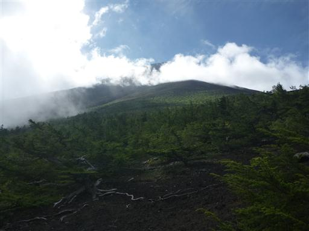
荒廃した建物。かつては修験者で賑わったこの道も今では歩く人がほとんどいない。
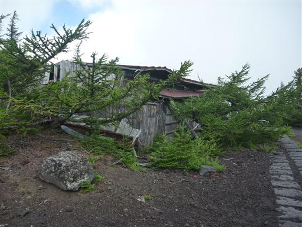
途中から道は急に細くなる。両側から枝が張り出していて極めて歩きにくい。
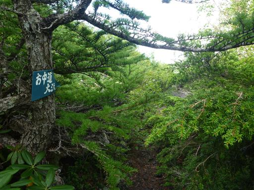
気象条件が厳しいため、周りの木は背が低い。
もっと晴れていれば素晴らしい展望が広がるのだが…
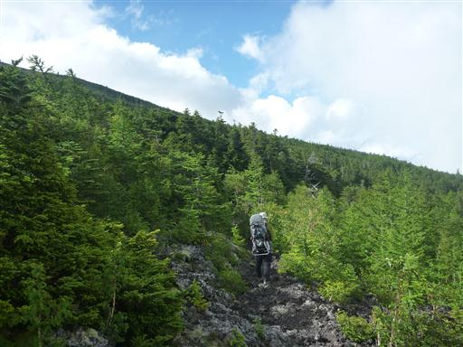
しばらく歩くと道は完全な樹林帯の中に入ってしまう。
こうなってしまうと普通の山道とあまり変わり映えがしない。
展望の良い道が続くかと思ったら、案外樹林帯の中の道が長い。
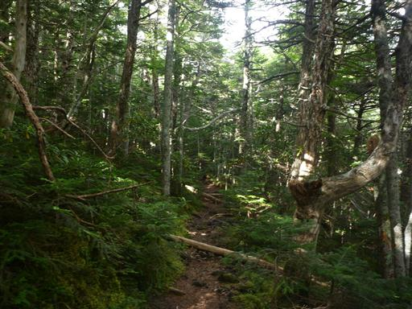
滑沢に到着。
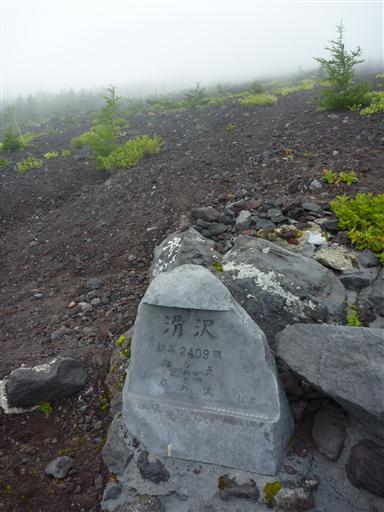
大沢崩れほどではないが、ここも小さな沢で崩落が進んでいる。
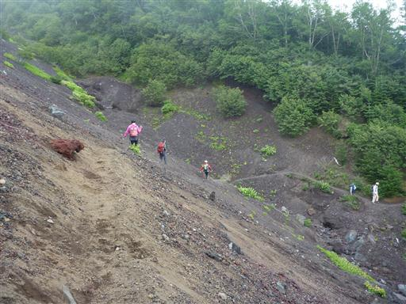
続いて仏石流しを通過する。
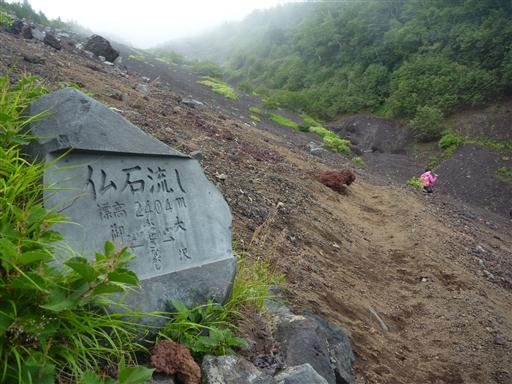
こんなところに季節外れのシャクナゲが咲いている。
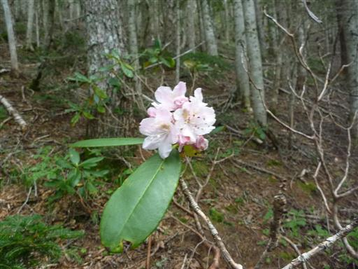
青空も見えているのだが、今日は雲が多い。
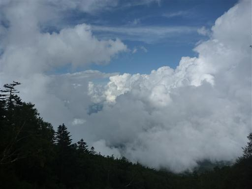
お中道の終点に到着。古い神社がある。
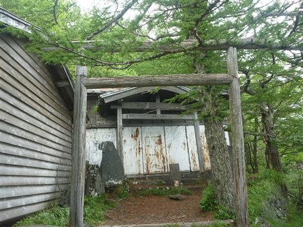
そしてその先にあるのが目的地の大沢崩れ。見事に崩壊している。
1日の崩壊量は大型ダンプカー28台分に相当するらしい。
昭和52年に転落事故があってから、ここを渡る道は閉鎖されてしまったとか。

大沢崩れの下流方向。
ロープ1本垂らしてくれれば渡れそうに思えるのだが…
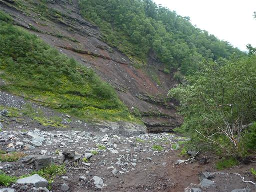
帰りは途中から小雨が降ってくる。
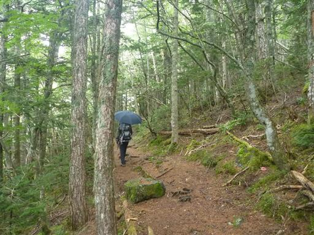
来たときは真白だったが、帰りは少し視界が広がる。
下界には富士の樹海と、大室山などの側火山が見えている。
少々天気は悪かったが、長い間訪れたいと思っていた大沢崩れを間近で臨むことができた。
かつての修験の道、お中道はなかなか魅力ある道だ。ぜひとも復活させてほしいと思う。
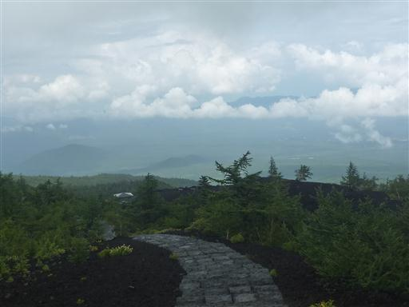